Burgers & Combos
Grilled-to-order beef, chicken and classic Kiwi burgers — pile on the works and add a thickshake.
Combos from $12
Cooked breakfasts served all day, hot roast meat sammies, burgers, golden fish & chips and loaded snack packs — the local feed Christchurch keeps coming back for. Friendly prices, no surprises.
A genuine local takeaway — easy to find, easy to grab on the way home.
Nothing sitting under a heat lamp. We cook it when you ask for it.
Big feeds, fair prices. A proper meal for the whole family without the sting.
Real photos of what comes out of our kitchen — burgers, fish & chips, fried favourites and loaded snack packs.
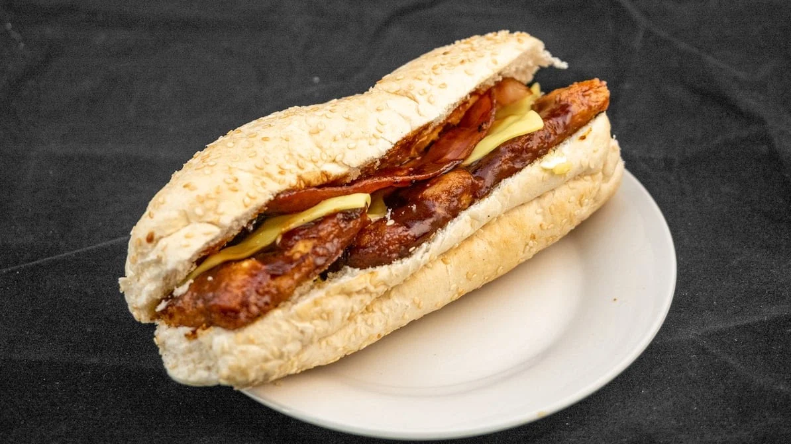

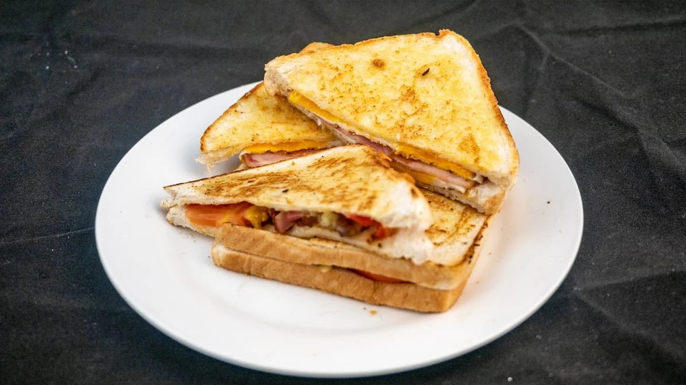
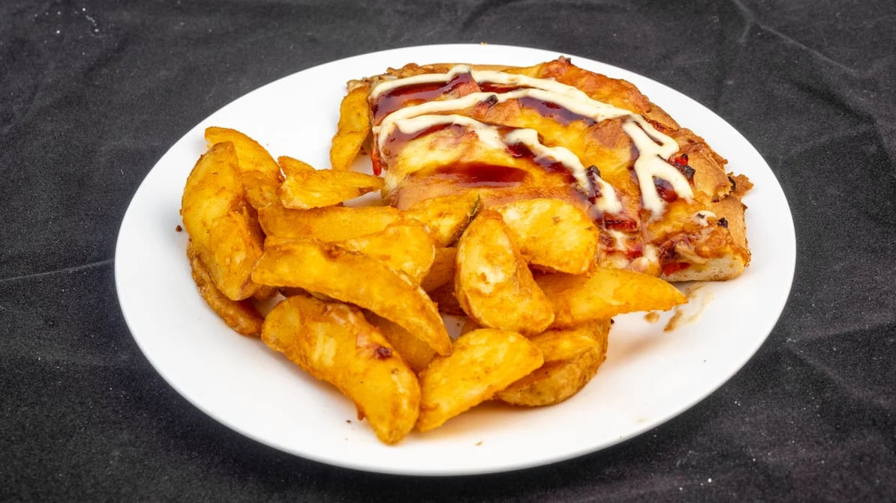

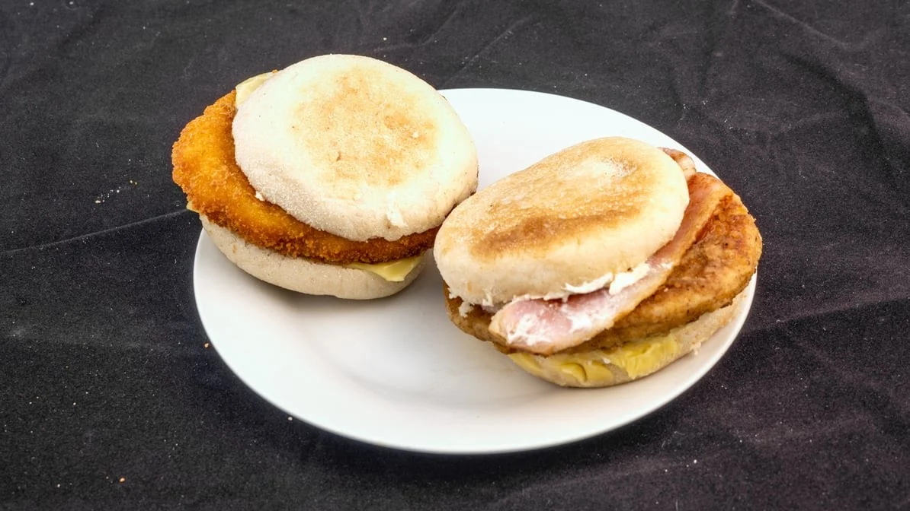
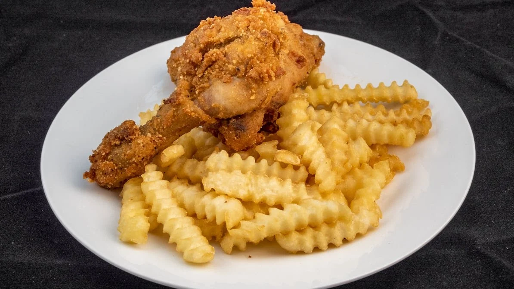

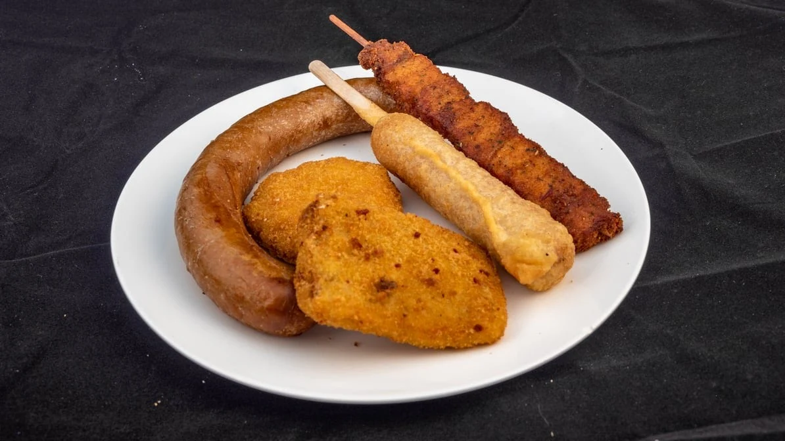
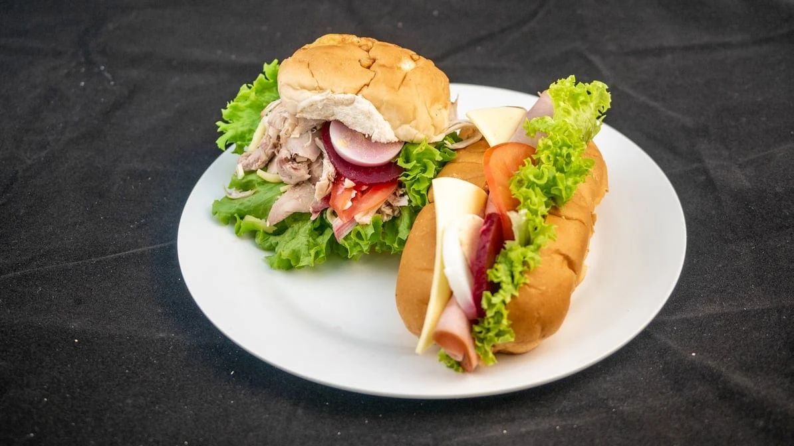
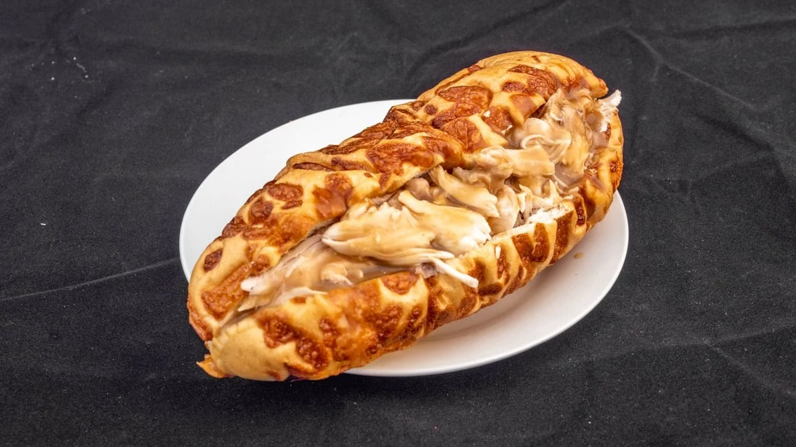
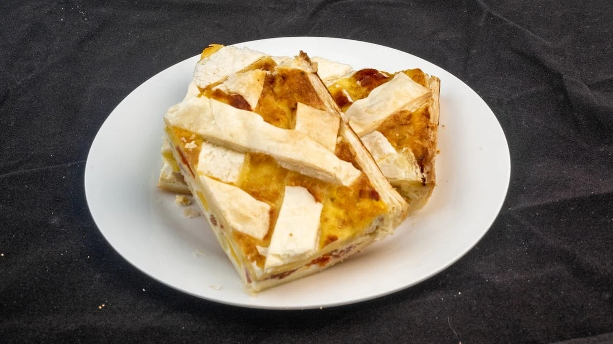
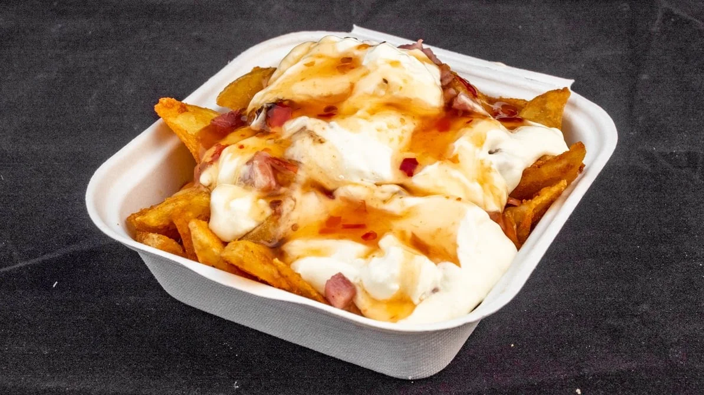
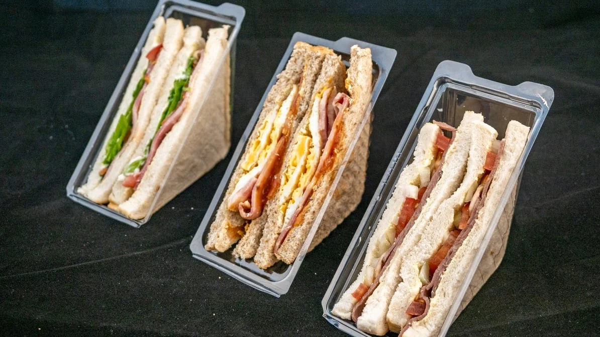
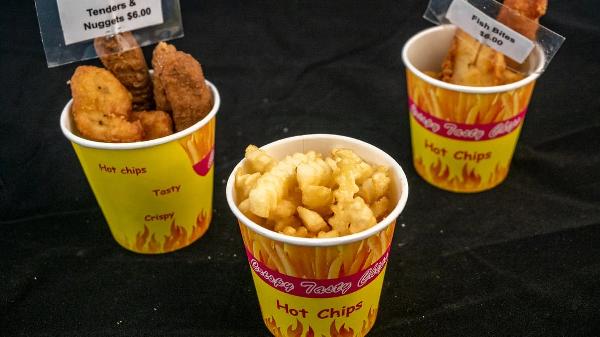
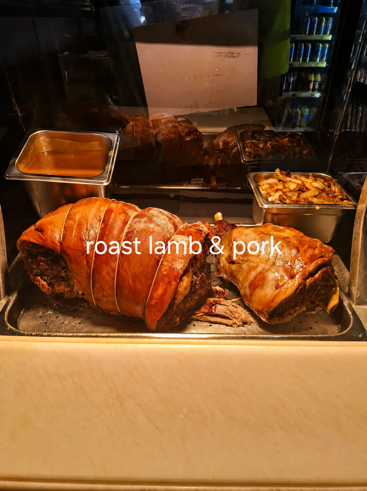
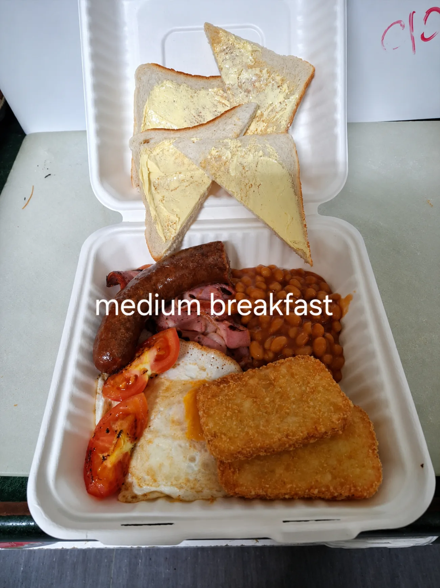
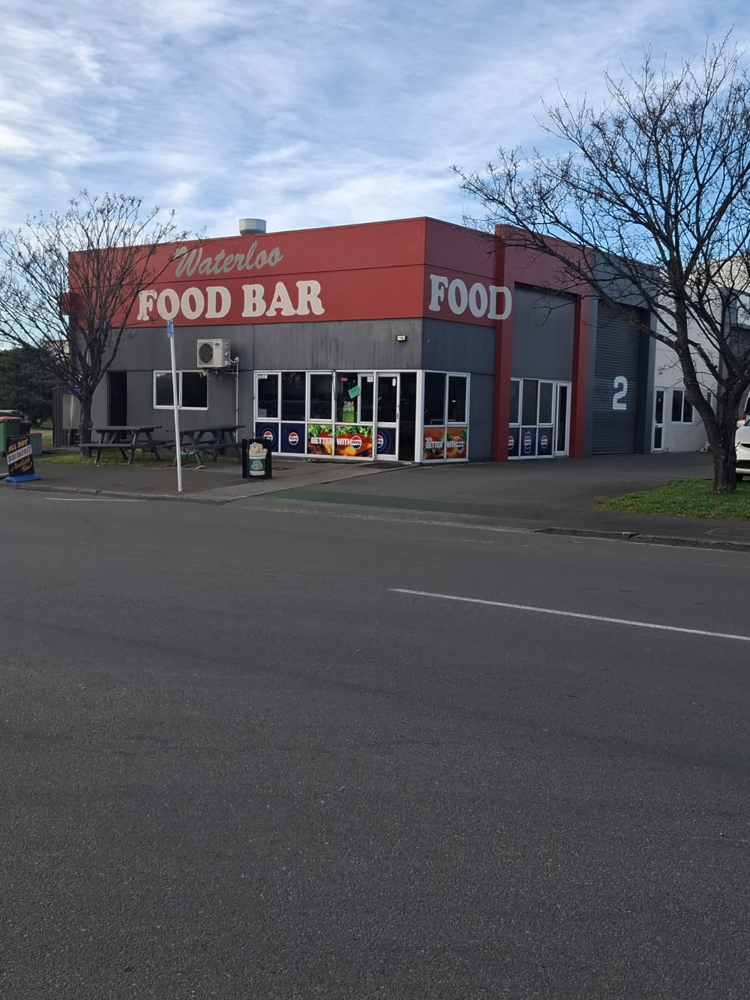
Waterloo Food Bar is a Christchurch food bar run on a simple idea: good food, cooked fresh, at prices that don't make you wince. No fancy fuss — just the cooked breakfasts, roast meat sammies, burgers and chips the neighbourhood actually wants.
Jo and the team know most regulars by their order. Phone ahead and it'll be hot and bagged when you walk in, or order through Uber Eats and we'll bring it to you.
The friendly faces keeping the grill hot and your order moving. (Sample roles for this demo.)
Runs the show and greets the regulars. Make sure every order leaves hot, right and good value.
The hands on the burgers, fryer and chips — cooking fresh to order all day, every day.
Takes your call, bags the order and keeps the queue moving. Quick, friendly, sorted.
Rated 4.6 from 36 reviews on Google — here's what Hornby has to say.
"Pretty much the backbone of the Waterloo Road industrial area. The ladies in there are awesome and you can tell they work hard to provide good meals. Friendly service, fair pricing. Their roast meat rolls are nice and filling."
"Best stop for a country-style banger — a great way to start my morning with a slice of bacon and egg pie hot off the grill. Most of the kai is handmade and this team can cook."
"Amazing food, constant foot traffic until the shop closes around 3pm. Slices and baking, and food made on site. If you're in Hornby, call in to see for yourself."
"Loved the sausage rolls, nice and juicy! The rolls are packed with meat, veg and sauce. Great lunch, thanks Food Bar."
"Never had anything to complain about — best cheese rolls, lovely pies, homemade slice. Love this place."
"Lovely service and a great chicken and gravy roll. Definitely recommend this place for a quick bite."
A quick review helps other locals find us — and keeps the grill busy. It only takes a few seconds.
Leave Us a ReviewCall through your order and we'll have it hot and ready, or reach us any way that suits — we're right here in Hornby.
Breakfast & lunch, Monday to Friday. Hot roast lamb & pork on Thursday & Friday lunchtime.
Call through your order and we'll have it hot and ready, or reach us any of these ways.